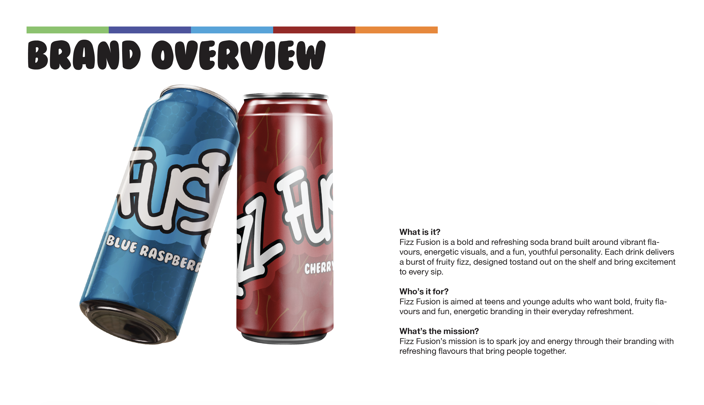
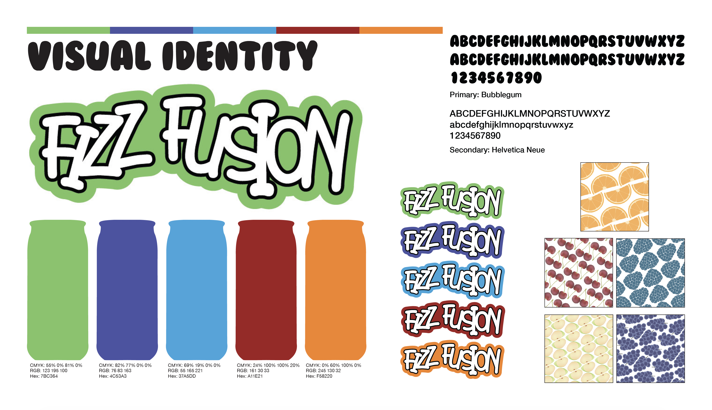
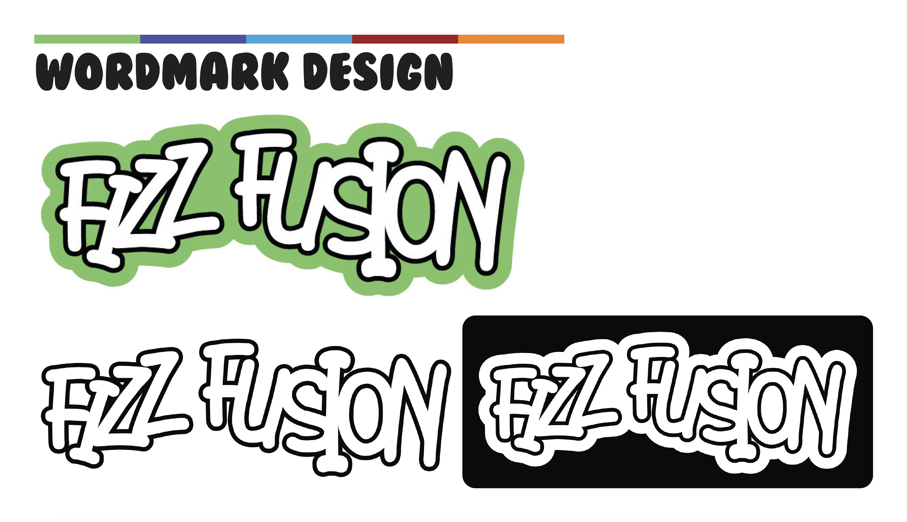

Fizz Fusion Brand Re-Design
Tools: Illustrator, Photoshop
Year: 2025
Project Overview
Following feedback and brand evolution, Fizz Fusion underwent a brand refresh. This modern redesign keeps brand recognition while increasing visual appeal.
Updates Made
- Refined Logo Mark
- Enhanced Color Palette
- Updated Typography System
- Modern Pattern Elements
- Refreshed Visual Language
Design Process
While keeping the core brand identity, the redesign modernizes the visual approach with cleaner lines, improved scalability, and better function across digital and print media.
The new design system is more flexible, allowing for better adaptation to different product lines and marketing campaigns.






Disclaimer
Fizz Fusion is a fictional brand created for demonstration purposes only, this project was also completed as a portfolio piece in high school.